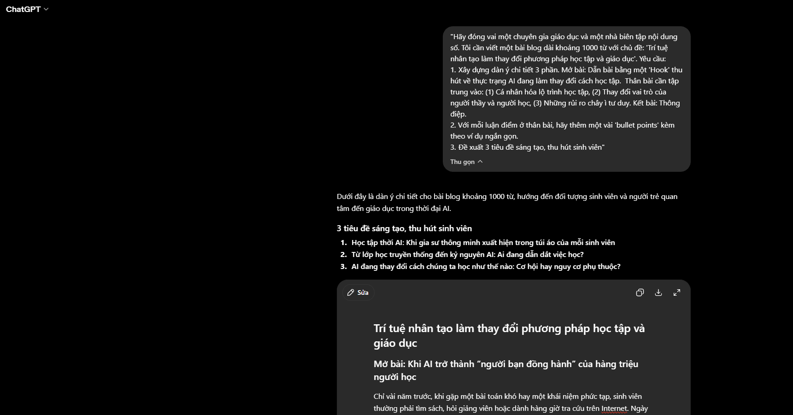
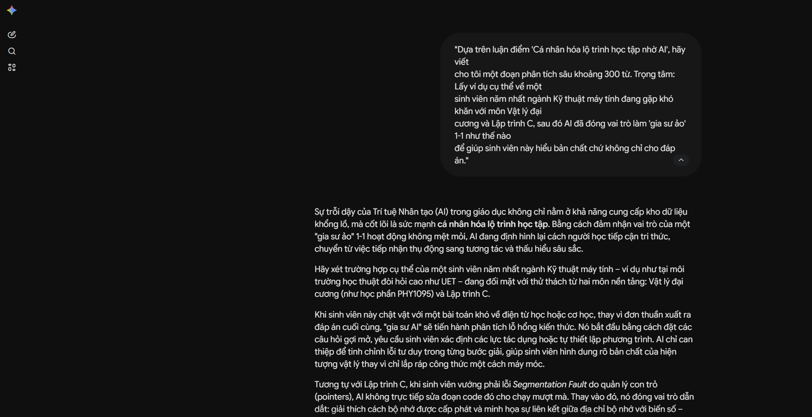
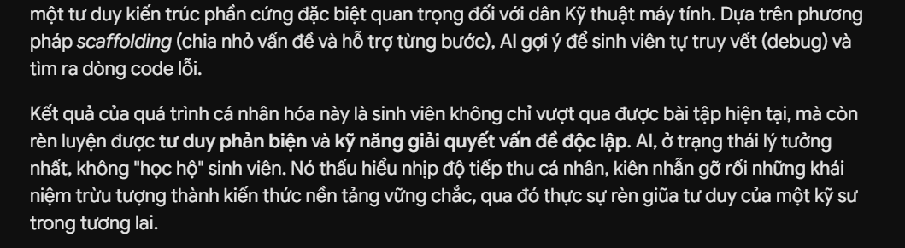
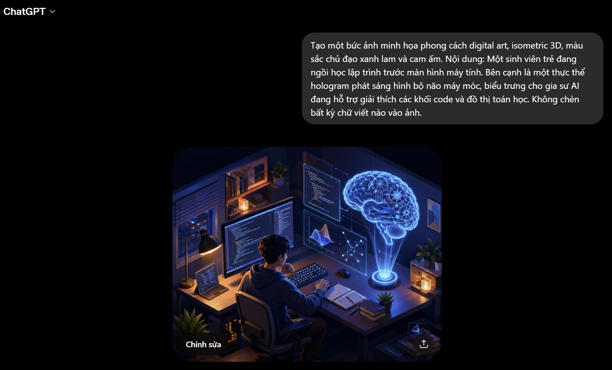

Câu lệnh khởi tạo (Prompt lần 1): "Hãy đóng vai một chuyên gia giáo dục và một nhà biên tập nội dung số. Tôi cần viết một bài blog dài khoảng 1000 từ với chủ đề: 'Trí tuệ nhân tạo làm thay đổi phương pháp học tập và giáo dục'. Yêu cầu:




| Tiêu chí đánh giá | ChatGPT (Lên ý tưởng & Dàn ý) | Google Gemini (Đào sâu nội dung) | DALL-E 3 (Thiết kế hình ảnh) |
|---|---|---|---|
| Điểm mạnh nổi bật | Tư duy logic xuất sắc, phân bố cục chặt chẽ. Khả năng tạo "hook" và tiêu đề rất sáng tạo, đánh trúng tâm lý người đọc. | Khả năng ngôn ngữ mượt mà, hiểu rõ ngữ cảnh kỹ thuật sâu sắc. Phân tích các ví dụ học thuật rất chuẩn xác. | Bám sát chi tiết hình ảnh, màu sắc hiển thị đúng yêu cầu (tương phản xanh - cam), phong cách 3D isometric chuyên nghiệp. |
| Hạn chế | Đôi khi văn phong hơi máy móc, sử dụng nhiều từ ngữ "đao to búa lớn" không tự nhiên. | Các đoạn văn đôi khi quá dài, cần người dùng can thiệp cắt tỉa để tránh lan man. | Vẫn có lỗi nhỏ ở các chi tiết hình học phức tạp. Thường cố gắng tự chèn các ký tự vô nghĩa dù đã bị cấm trong prompt. |
| Hiệu quả trong dự án | Rút ngắn 70% thời gian định hình cấu trúc bài viết. Đóng vai trò như một người hướng dẫn khung xương. | Làm phong phú "lớp thịt" của bài viết, cung cấp chất liệu sắc bén để phản biện. | Tạo ra sản phẩm trực quan sinh động, tăng tính thẩm mỹ và chuyên nghiệp cho bài báo cáo (đạt 100% mục tiêu hình ảnh). |
Người viết: Lý Trần Hiếu (Có sự hỗ trợ cấu trúc từ ChatGPT và Gemini)
Chỉ vài năm trước, khi gặp một bài toán khó hay một khái niệm phức tạp, sinh viên thường phải tìm sách, hỏi giảng viên hoặc dành hàng giờ tra cứu trên Internet. Ngày nay, thay vào đó, bạn mở một khung chat lên, chỉ với vài dòng câu hỏi gửi đến một công cụ AI, người học có thể nhận được lời giải thích, ví dụ minh họa và thậm chí là một lộ trình học tập được thiết kế riêng trong vài giây.
Đó không phải là tương lai, đó là thực tế của giáo dục trong kỷ nguyên Trí tuệ nhân tạo (AI).
Sự phát triển mạnh mẽ của trí tuệ nhân tạo (AI) đang tạo ra một cuộc cách mạng trong giáo dục. AI không chỉ thay đổi cách học sinh, sinh viên tiếp cận tri thức mà còn làm biến đổi vai trò của người thầy, phương pháp giảng dạy và cả cách đánh giá năng lực. Tuy nhiên, bên cạnh những cơ hội to lớn, AI cũng đặt ra những thách thức đáng suy ngẫm về khả năng tư duy độc lập của người học. Sự hiện diện của Generative AI không chỉ là một công cụ mới, nó đang tạo ra một cơn chấn động làm sụp đổ phương pháp học tập truyền thống và thiết lập những luật chơi hoàn toàn mới.
Hệ thống giáo dục truyền thống thường vận hành theo mô hình "one-size-fits-all" (một chương trình cho tất cả). Nhưng AI đã phá vỡ thế độc quyền này. Giờ đây, quá trình học tập được may đo riêng biệt.
Một sinh viên ngành Kỹ thuật máy tính chật vật với một bài toán khó về điện từ học hoặc cơ học, thay vì đơn thuần xuất ra đáp án cuối cùng, "gia sư AI" sẽ tiến hành phân tích lỗ hổng kiến thức. Nó bắt đầu bằng cách đặt các câu hỏi gợi mở, yêu cầu sinh viên xác định các lực tác dụng hoặc tự thiết lập phương trình. AI chỉ can thiệp để tinh chỉnh lỗi tư duy trong từng bước giải, giúp sinh viên hình dung rõ bản chất của hiện tượng vật lý thay vì chỉ lắp ráp công thức một cách máy móc.
AI theo dõi tốc độ tiếp thu, nhận diện lỗ hổng kiến thức và kiên nhẫn tùy chỉnh các bài tập thực hành. Nó biến việc tự học từ một hành trình cô độc thành một quá trình tương tác liên tục, nơi người học là trung tâm của hệ sinh thái tri thức.
Trước đây, năng lực của học sinh sinh viên thường được đo đếm bằng khả năng ghi nhớ và tái tạo thông tin. AI đã làm cho kỹ năng này trở nên lỗi thời. Tại sao phải thi nhau ghi nhớ các mốc lịch sử hay cú pháp lệnh khi máy móc có thể truy xuất chúng trong một phần nghìn giây?
Phương pháp học tập mới đòi hỏi sự dịch chuyển về chất. Người học phải nâng cấp mình thành những "Tổng biên tập". Giá trị cốt lõi giờ đây nằm ở việc biết đặt câu hỏi đúng (Prompting), biết nghi ngờ và xác thực thông tin (Fact-checking), và khả năng xâu chuỗi dữ liệu thô thành những sáng tạo nguyên bản.
Giảng viên cũng bước khỏi bục giảng để trở thành người dẫn dắt (Facilitator), tập trung bồi dưỡng tư duy phản biện và đạo đức nghề nghiệp thay vì chỉ truyền đạt kiến thức thuần túy.
Tiện lợi luôn đi kèm với cái giá của nó. Sự kỳ diệu của AI mang theo một rủi ro đạo đức khổng lồ: Sự lười biếng tư duy.
Khi một sinh viên quen với việc ném đề bài vào AI và copy-paste kết quả để nộp, họ đang tự cắt đứt dây thần kinh phản biện của mình. Việc giải một bài toán không chỉ để ra đáp án, mà là quá trình rèn luyện nếp nhăn của não bộ, học cách chịu đựng sự thất vọng khi thử sai và niềm vỡ òa khi tìm ra chân lý.
Nếu để AI "bước hộ" những nấc thang đó, kiến thức mà sinh viên có được chỉ là lớp vỏ rỗng. Khi hệ thống sụp đổ hoặc đối mặt với các vấn đề thực tế chưa từng có trong tập dữ liệu huấn luyện, lớp vỏ rỗng ấy sẽ vỡ vụn.
Trí tuệ nhân tạo không sinh ra để tiêu diệt nền giáo dục, nó đến để nâng cấp chúng ta. Để sống sót và vươn lên, sinh viên không được phép biến mình thành cái bóng của công nghệ.
Hãy dùng AI như một chiếc la bàn định hướng, một người trợ lý đắc lực, nhưng tuyệt đối không bao giờ giao phó vô lăng tư duy của mình cho máy móc. Chừng nào bạn còn giữ được ngọn lửa tò mò, tư duy độc lập và một la bàn đạo đức vững vàng, AI sẽ mãi chỉ là bệ phóng để bạn bay xa hơn.
Quy trình học tập và viết lách truyền thống (Đọc tài liệu ➔ Tóm tắt ➔ Viết nháp ➔ Sửa chữa) đã dịch chuyển sang một mô hình quản trị mới:
Lên ý tưởng (Prompting) ➔ Đánh giá & Xác thực (Fact-checking) ➔ Biên tập & Thổi hồn (Personalizing)
Vai trò của người viết không còn là người "tạo ra từ đầu" mọi thứ, mà trở thành một "Tổng biên tập", kiểm soát chất lượng, định hướng thuật toán và quyết định thông điệp cốt lõi.
➔ AI cần được quản lý bằng các quy định minh bạch và công bằng để trở thành công cụ hỗ trợ con người, thay vì "kẻ cắp" chất xám.